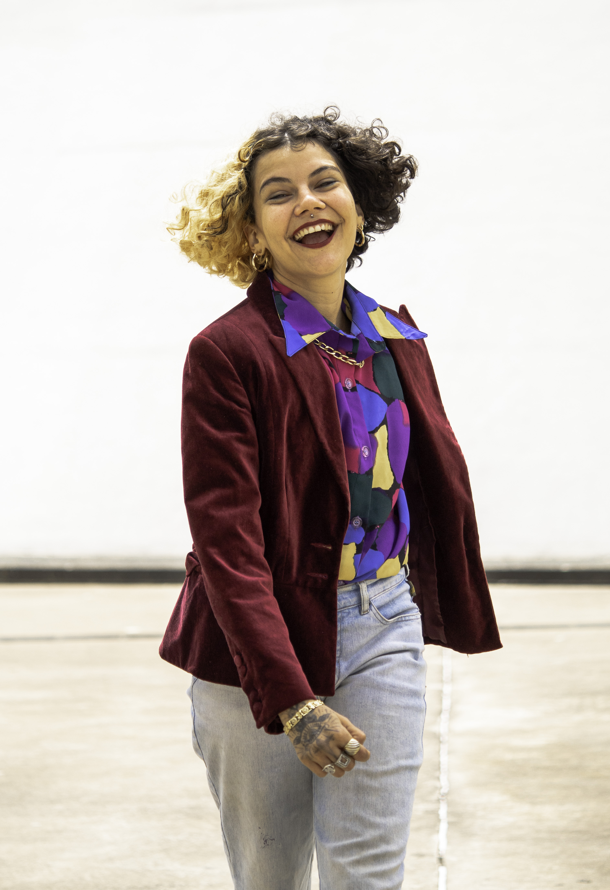

Meus Pensamentos
- 
Olha, não é por nada não, mas esse post está o suprassumo do prazer, uma obra de arte em forma de conteúdo, um carinho no coração de quem ama referências! E vai, isso não é um post, é uma aula! Aqui mirmã, elas dão o nome! .
Vale lembrar que: Dentro dos cards dei referências, de alguns perfis de profissionais que atuam no insta e que no MEU ponto de vista podem beber e se inspirar (conscientemente ou inconscientemente) da fonte de uma determinada corrente artística. De forma alguma estou nomeando o trabalho das outras pessoas, até porque isso é gravíssimo e nunca, jamais eu gostaria que fizessem isso com o meu trabalho! .
Passado isso! Deixo essa aula/post para que vocês se deleitem, salvem, compartilhem e me digam o que acharam e quais insights que te trouxe